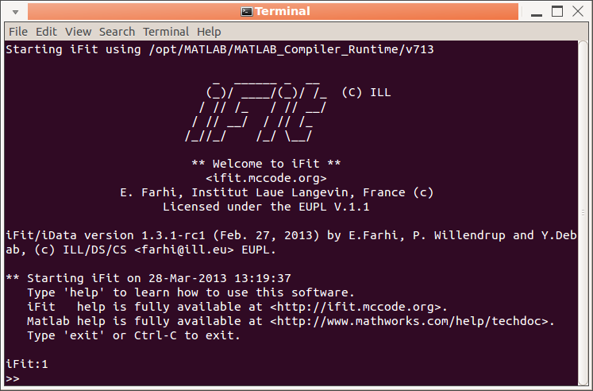

A multi-core/CPU computer is highly recommended in order to run the DFT computations is a reasonable time. Typically, a 16-cores machine allows to run simple material (e.g. binary/ternary materials with up to 10 atoms per cell) phonon estimates within 1 hour. More complex materials will require e.g. a few days. In terms of memory, you should have 2-3 Gb per core, that is to say 32 Gb RAM. When installed on disk, the whole system requires less that 10 Gb, and you need some limited storage. So, in short 100 Gb is fair.
The required software needed to perform Phonon estimates are (see below for the installation procedure):
See below on how to install these packages. If some of the packages are not available, or not functional, iFit-Phonons will still be usable with the other functional parts. It is however recommended to install most of this list (see below).
- iFit http://ifit.mccode.org which can be used with Matlab or as a standalone executable not requiring any license. You can get the development source code at https://github.com/McStasMcXtrace/iFit
- ASE https://wiki.fysik.dtu.dk/ase/ which requires Python, Numpy, Scipy and MatPlotLib.
- python-hdf5storage to transfer large data sets between Python and iFit.
- Optional: PhonoPy https://atztogo.github.io/phonopy/
- Optional: QE-util https://github.com/jochym/qe-util
- Optional: any DFT code out of QuantumEspresso, ABINIT, VASP, GPAW, ELK.
- Optional: An implementation of MPI (e.g. OpenMPI) is highly recommended in order to make use of the multi-core/cpu hardware.
- Optional: PHON http://www.homepages.ucl.ac.uk/~ucfbdxa/phon/ (this is low priority)
The recommended systems for running iFit-Phonons are Ubuntu (14.04 or 16.04) and Debian Jessie 8.
The fastest way to have a running system for Phonon estimates using iFit is to download our ILL/CS Live DVD ready-to-run system with Phonons, McStas and iFit (standalone) all pre-installed.
Then you can either build a bootable USB key using e.g. Unetbootin (or simply a command in the style "dd if=iso of=usbkey bs=1m"), burn the image (for those still having a DVD burner), or launch the system in a virtual machine using e.g. VirtualBox.
This system contains all the needed software, including the web service (see below).
If you have a Debian/Ubuntu/Mint Linux system, then you can install the whole infrastructure from our repository http://packages.mccode.org/. Refer to that page to setup the repository reference on your system, update the package list, and then install ifit-phonons using your package manager such as Synaptic, Aptitude, or simply apt:
sudo apt-get updatesudo apt-get install ifit-phonons
This is equivalent to the following dependencies:
If in addition you wish to use the web interface (which is a very simple access solution without learning how to use the iFit-Phonons software itself), install the package ifit-web-services:
- ifit elk-lapw gpaw python-matplotlibabinit abinit-doc abinit-psp quantum-espresso quantum-espresso-sssp phon libnetcdf-dev libxc1 openmpi-bin abinit-psp-jth abinit-psp-gbrv python-ase-qe-spglib python-hdf5storage python-ase python-phonopy
sudo apt-get install ifit-web-services
Then open a browser and enter the URL address http://localhost/ifit-web-services . To benefit from the email tracking (start/stop of computations) you will need to edit the file /usr/lib/cgi-bin/computing_sqw_phonons.pl as administrator and change the email server/account/password to use.
Use your package manager (e.g. yum and dnf), if available, to install some of e.g.
python-ase, quantum-espresso, elk-lapw, gpaw, abinit.Then install the standalone linux executable of ifit (standalone, zip archive) from e.g. http://ifit.mccode.org/Downloads/binary/glnx64/ into e.g. /usr/local/ifit. Also install the MCRInstaller in /opt/MATLAB. Create a link to the ifit exeutable with e.g.:
sudo ln -s /usr/local/ifit/ifit /usr/local/bin/ifitYou may try to install the ifit-web-services package from https://github.com/McStasMcXtrace/iFit-Web.
Install the standalone executable of ifit (standalone, zip archive) from e.g. http://ifit.mccode.org/Install.html
You need Python, Numpy, SciPy and MatPlotLib to be installed. For this, we recommend that you install the Anaconda distribution.
Install ASE, PhonoPy and QE-util using conda or pip, e.g.:
Finally, install the DFT codes referring to their documentation (see 'requirements' above). Some of the packages may not be easily installable on MacOSX or Windows systems.conda install phonopyconda install -c jochym qeutilpip install ase
It is possible to input a wide set of file formats, including CIF, PDB, POSCAR (VASP), Material Studio (XSD, MDL), CASTEP, ABINIT, DL_POLY, Dmol, Espresso, ETSF, ShelX, Wien2k, Siesta, Yaml, Json, ...
You should refer to the table in ASE/File input IO module for a full list of supported input formats.
When using such a structure, a number of DFT computations will be used to determine the force constants in the crystal.
This extensive data base of materials provides optimised (i.e. energetically minimized structures) configurations, which can be obtained as CIF and VASP POSCAR files. In addition, when registered, you can submit your own structures or optimisation.
This resource makes use of some MaterialsProject materials, and the force constants have been pre-computed. You should search for your material in the list, and if you're lucky, you should get the LZMA archive. Extract it and identify one of the 'phonon-XX' or 'gruneisen-XX' directories, usually one in the middle of the scanned range (which are lattice volume variations). You will use that directory as input to iFit-Phonon. The force constants do not need to be calculated, which saves a lot of time. Only the final DFT steps will be computed (to get e.g. the stress tensor, moments, and other physical quantities).
These resources are mostly storage areas, which contain many materials. Search for the materials you are interested in. Get the initial/optimised configuration files.
If you are using Matlab, use:
which will make iFit fully available from Matlab.>> addpath(genpath('/path/to/ifit'))
If you do not have a Matlab license, start the iFit standalone by either clicking on its icon, or start a Terminal and type
Then, the main command to use for the phonon computation is:ifit -nodesktop
>> s=sqw_phonons('file', ...)Once done, you get the result in the form of a variable (here 's').WARNING for iFit standalone
- do not use accent characters at the Terminal iFit prompt. This will probably crash iFit [bug 624817].
- Ctrl-C is use for stopping a current computation, or exit iFit. Rather use the menu for Copy/Paste actions.
To use a very basic user interface, use the procedure above and type in the ifit/Matlab prompt:>> s=sqw_phonons('gui')A dialogue window pops-up, and allow to enter (as text) a filename, directory, or python code to describe the atomic configuration, as well as the calculator and other options. This dialogue window is less fragile than the Terminal concerning accent characters, and should be preferred for non-expert users.
Once done, you get the result in the form of a variable (here 's').
You can open a TextEdit window by typing: at the iFit/Matlab prompt. This is highly recommended when using the iFit standalone distribution (without Matlab license). If you are using a Matlab license, then the Matlab command window is more convenient.>> TextEdit
at the iFit/Matlab prompt. This is highly recommended when using the iFit standalone distribution (without Matlab license). If you are using a Matlab license, then the Matlab command window is more convenient.>> TextEdit
You can type Matlab/iFit commands in there, and then use the File/Evaluate menu item to evaluate either all the content, or a selection. The result is sent into the iFit Terminal. Any variable used in the TextEdit window appears (when evaluating) in the iFit Terminal, and vice-versa. You can open as many TextEdit windows as you wish, load/save files (e.g. .m), copy/paste filenames and raw text.
This way, you keep track of all commands entered to compute Phonons, and may execute selected ones.
The TextEdit window has a Help menu which links to the main iFit functionalities.
This options requires to install the ifit-web-services package (see above).
Accessing the iFit-Phonon infrastructure from a web browser completely hides the complexity of the command line. You only see a web page where you can configure most of the calculation options. Also, you do not need to keep a terminal opened during the computation, which is carried out in the background.
Also, you can launch a calculation remotely, as long as the computer is accessible. Novice users can launch calculations without any prior knowledge on the iFit infrastructure.
Once launched, note down the URL of the running computation, and do not switch off the server computer. You can monitor the calculation report any time.
The main command to use for the phonon computation is:
where 'file' is an atomic configuration file (POSCAR, CIF, PDB, Yaml, ... see all available formats) or directory containing such information. Additional arguments allow to specify the DFT calculator and configuration (see below). Once done, you get the result in the form of a variable (here 's'). This model object S(q,w) is of class 'iFunc' 4-dimensional with axes QH,QK,QL,E in [rlu^3, meV]. It holds the coherent inelastic contribution to the dynamical structure factor, in the harmonic approximation.>> s=sqw_phonons('file', ...)
If you forget to put 's=' before 'sqw_phonons', the returned model is assigned to the 'ans' variable. Simply type
to transfer the volatile answer into a named variable of your choice.>> s=ans;
See below on how to save these variables and secure your work.
When using the dialogue window, a similar variable is returned, but the input data is entered in the editable text fields.
When using the web interface, the object is created and all results, including the model object, are saved into a directory.
To get more help on the sqw_phonons command, access the iFit/Models page, or type:
or>> help sqw_phonons (displayed a raw text)
at the iFit/Matlab prompt.>> doc sqw_phonons (displayed in a web browser)
You may also read the main Models page, which lists all pre-defined models in iFit, including sqw_phonons.
To get help on the model object of class iFunc, use:
The evaluation of the model provides a data set of class iData. To get help about these objects, use:>> disp(s) % displays details about the object
>> methods(s) % lists all methods that can be used with iFunc objects >> help iFunc % help about the class definition
>> doc(iFunc) % main web help about the class
>> help iFunc/<method> % explains how to use a given method
Finally, the whole Matlab documentation is available on-line for free, especially to complement the standalone limited help system.>> disp(d) % displays details about the object >> methods(d) % lists all methods that can be used with iData objects >> help iData % help about the class definition >> doc(iData) % main web help about the class >> doc(iData,'Math') % help about mathematical operators
>> help iData/<method> % explains how to use a given method
Last, you can access the iFit source code at https://github.com/McStasMcXtrace/iFit, follow the changes and get the cutting-edge version. The 'Issues' tab lists all current bugs and enhancement requests (so called 'tickets').
You can declare a new ticket by first registering at github. Once registered, if you ever find a bug and wish to correct it, do so by editing the relevant iFit source code from the github page, and commit it. A 'pull request', that is a request for a modification, will be created. After discussion via the merge request tracking and email, your modification will be approved and included in the iFit 'master' code, to be part of the next release.
Last, if you are lost, do not hesitate to register at to the ifit-users list and send an email at ifit-users@mccode.org.
It is usually not an easy task to choose the 'right' DFT calculator, as there are many on the market. However, following the benchmarks below, as well as feedback from 'phonon' specialists, the best calculators would be:
Some other calculators exist but are not as efficient as the list above for phonon calculations, in our view:
- VASP: a rock solid solution, using validated pseudo-potentials for all elements. Requires a valid license.
- QuantumEspresso (QE): when used with the SSSP pseudo-potentials, is a very nice (free) alternative to VASP, and computes faster for similar settings.
- Elk: often provides reasonable results, but is much slower that VASP and QE (by factor e.g. 10).
We are continuously testing new calculators, and will report for their capabilities in the future (Octopus, Siesta, bigDFT, CP2K, Gulp, ...).
- ABINIT: quite difficult to have converging and stable results, but very fast when it does. iFit/Phonons supports PAW(GBRV), PAWXML(JTH), FHI, HGH and TM pseudo potentials (see below).
- GPAW: is slow compared to VASP and QE.
- NWChem and Dacapo calculators are not supported as they do not provide reliable results for phonon calculations.
You may read the DFT code cross comparison study available at https://molmod.ugent.be/deltacodesdft to get an idea of the software accuracy.
The calculator, once chosen, is specified using the 'calculator' field in the options, or writing the calculator as an argument to sqw_phonons:Depending on the DFT code chosen, the lattice complexity, and the computer capabilities, the calculation may take from minutes to days/weeks. See below for examples.
- sqw_phonons(..., 'calculator=qe', ...)
- sqw_phonons(..., 'qe', ...) % 'quantumespresso', 'vasp','elk', 'abinit' ... also work
In most DFT codes, the plane wave energy cut-off is determined from the pseudo potential default. We recommend then to not specify any energy cut-off and let the DFT calculator find suitable settings.
In case you still wish to specify a cut-off value (in eV), you should use the 'ecut' field in the options:The recommended values from the MaterialsCloud SSSP convergence tests indicate e.g. 100 Ry=1300-1500 eV. The MaterialsProject recommendation is around 520 eV. Remember that 1 Ha = 27.2 eV and 1 Ry=Ha/2=13.6 eV.
- sqw_phonons(..., 'ecut=1500', ...)
The computation time increases approximately (and phenomenologically) as the energy cut-off to the power 1.6. So using an energy cut-off of 520 eV is about 5 times faster than using a 1500 eV cut-off.
The 'smearing' is used when the electronic bands are very sharp, e.g. in metallic-type systems. The smearing avoids the discontinuity around the electronic band gaps, and highly improves the convergence of the DFT cycles. For this reason, setting a smearing value is highly recommended, even for non-metallic systems when the convergence gets difficult. Recommended values (see SSSP) are e.g. 0.01-0.02 Ry = 0.1-0.3 eV. The default is to set a 0.13 eV smearing, except for Elk which has an automatic determination mechanism.
In case you wish to manually set the smearing, use the 'occupations' or 'smearing' option (in eV):
- sqw_phonons(..., 'smearing=0.1', ...)
We recommend the following values:
In practice, the smearing can also be given with arguments 'metal','semiconductor', and 'insulator' which correspond with the settings above.
- for metals: use 0.27 eV
- for semi-conductors: use a very small value, e.g. 0.01 eV
- for insulators: use a negative value (e.g. -1) to suppress the smearing. This is usually equivalent to setting a 0 smearing.
The size of the system influences the stability and accuracy of the computation. In short, a small system will have a tendency to result in unstable (negative/imaginary) modes, especially close to the Brillouin zone centers.
Let us consider a crystal with a lattice spacing a. The corresponding momentum norm is k1=2pi/a corresponds with 1 reciprocal lattice unit [rlu]. For a system containing a total of [N N N] supercells, the equivalent lattice parameter is increased by a factor N, and the minimum k vector is reduced by the same factor. The reduced lattice unit minimal k norm is then k = 1/N in [rlu] per atom in the unit cell. Now, by dividing the k-grid into a [K K K] Monkhorst-Pack mesh, the minimal k value that can be accurately estimated is again divided by K. We then get a minimal k-vector norm of 1/NK in [rlu]. Typically, for a supercell [3 3 3] and a MP grid [4 4 4], this results in a kmin=1/4/3=0.08. The K-points density per atom is then (1/kmin)3 =1728 per atom in the cell.
The conclusion is that increasing either the supercell or the K-grid mesh are equivalent. This also determines the accuracy at small k-vectors (e.g. zone centers).
In practice, using the above values ensures a k-point density higher than (NK)3 = 1000/atom in the cell, which is usually enough to get reasonable results:
- kpoints=4
- supercell=3
- kmin=0.08 rlu
More demanding settings could be to use a k-points density of (NK)3 = 8000/atom:
- kpoints=5
- supercell=4
- kmin=0.05 rlu
The sqw_phonons model automatically determines the best kpoints and supercell grid in order to achieve a k-points density higher than 1000/atom, which is usually satisfactory. However, some codes may then locally produce unstable (negative/imaginary) modes, especially close to the zone-center or high symmetry points. In this case, you may wish to use an other k-points/supercell set, with the 'kpoints' and 'supercell' options:
Remember that the calculation time is proportional to the k-points density. So using the kpoints=4; supercell=3 is about 5 times faster as using kpoints=5; supercell=4.
- sqw_phonons(..., 'kpoints=5; supercell=4', ...)
Most DFT codes come with their own set of pseudo-potentials. The rationale for sqw_phonons is to prefer a set with a GGA/PBE exchange-correlation (XC) functional. You can select the XC using the 'xc' option:The possible values for xc depend on the DFT calculator, but all support 'LDA','GGA','PBE'. Some support 'RPBE','PBEsol'.
- sqw_phonons(..., 'xc=PBE', ...)
In all cases, GGA (generalised gradient approximation) should be preferred over LDA ( local density approximation). Among the GGA, the PW91, PBE or RPBE are recommended when available.
It is also possible to select among different pseudo-potential sets (setups) using the 'pps' option. This option highly depends on the calculator. Some calculators such as VASP, QuantumEspresso, Octopus and ABINIT allow vast choices, specifying either the file format and/or the origin of the pseudo-potential. Typical values can be:We recommend you to refer to the Models page for more details.
- 'NC' (norm conserving),
- 'PAW' (Abinit PAW format, e.g. GBRV),
- 'PAWXML' (GPAW unified format, e.g. JTH)
- 'FHI' (Fritz-Haber-Institute)
- 'HGH' (Hartwigsen-Goedeker-Hutter)
- 'TM' (Troullier-Martins)
The criteria for stopping the DFT calculation is to study the convergence of the total energy during the SCF cycles. The usual criteria to stop each calculation is when the difference in energy gets smaller than a threshold 'toldfe'. This value is often set to 10-6 or 10-7 [eV]. For faster calculations (relaxed convergence criteria), we use 10-5 [eV] as default value, which helps convergence but may result more often in unstable modes.
The maximum number of SCF cycles is usually around 30-50. However, some codes and pseudo-potential choices may result in a longer pathway to energy convergence. Then the default value (set by each DFT calculator) should be increased by mean of the 'nsteps' option:
- sqw_phonons(..., 'toldfe=1e-5; nsteps=100', ...)
For a longer, but potentially more accurate, calculation, use:
- sqw_phonons(..., 'toldfe=1e-6; nsteps=300', ...)
In principle, the initial structure given to the calculator for the force constants estimate is at the equilibrium (minimum energy as a function of e.g. lattice cell parameters or atom positions). This usually means that the forces for the equilibrium structure (when no additional displacement have been done yet) should not exceed e.g. 3 10-4 eV/Angs. In case these forces are larger, there are more chances that the force estimates get wrong and unstable modes appear.
In order to handle this case, it is highly preferable to optimize the structure before starting the phonon calculation. This can be done manually using your preferred DFT code, but we also provide an automatic procedure for this, using:
- sqw_phonons(..., 'optimize', ...)
- sqw_phonons(..., 'optimizer=BFGS', ...)
which will then move atoms in the lattice, in order to minimize the total energy, keeping the lattice parameters constant. The optimizer can be chosen among 'BFGS' (default), 'LBFGS', 'MDMin' and 'FIRE'.
A warning is in place here as this optimization may change the space group. We thus do not recommend to optimize the structure systematically.
Many other options, not detailed here, are explained in the sqw_phonons documentation of the Models page.
It is possible to generate an automatic report (in HTML) while computing the lattice dynamics model, by specifying the 'report' option:
This report contains all information regarding the calculation itself, but also generates nice images of the structure, the dispersion curves along principal axes, the density of states, the powder average, etc. This is an HTML document with attached images and files, which can be viewed with any web-browser.
- sqw_phonons(..., 'report', ...)
This report can also be generated any time from an existing model 's', using:
Once done, open the report following the link printed in the command window, or using e.g.:
- sqw_phonons( s , 'report')
- web( s.UserData.options.report )
By default, the calculation runs on the computer you are using. When MPI is available, all CPU's/cores are used. As stated above, a machine with at least 8 cores is recommended, with about 2-4 Gb per core (e.g. 16 Gb minimum). If you wish to specify manually the number of cores, use e.g. (here 16 cores requested):
If you wish to launch this calculation on a distant machine, you need to have the required infrastructure (see above) installed on the cluster. In addition to the number of MPI slots to use, you may forward the list of machines to use with the syntax:
where the specified text file is a list with one machine/core per line, as used by e.g. mpirun.
Then assemble as usual a job submission script running e.g. (here for OpenPBS, all in one line):
ifit -nodesktop "try; s=sqw_phonons('POSCAR_SrTiO3','qe','mpi=$PBS_NP','machines=$PBS_NODEFILE'); catch ME; disp('Error using sqw_phonons'); disp(getReport(ME)); end; save; exit"The 'ifit' command will by itself request mpirun/mpiexec, so that it is not required to specify it in the job.
Once a model has been created using the sqw_phonons call, it is possible to derive a number of physical quantities to estimate the quality of the lattice dynamics model. In the following, we assume the model has been transferred into a variable 's'.
For instance you may use:
The result is a model of type iFunc, which has model parameters. As DFT models are ab-initio, they have very few adjustable parameters. The model evaluates the neutron scattering intensity, and has the following parameters:
- s=sqw_phonons('POSCAR_Al','emt','metal')
p( 1)= AmplitudeThe model energy width 'Gamma' is the same for all modes. Any imaginary part in the mode frequencies is added to the width. The 'Energy_scaling' parameter allows to scale the phonon spectrum in order to e.g. adapt it to measurements. All frequencies are then scaled by the same factor.
p( 2)= Gamma Damped Harmonic Oscillator width in energy [meV]
p( 3)= Background
p( 4)= Temperature [K] used to compute the Bose factor n(w)
p( 5)= Energy_scaling
The object contains a lot of information in it's UserData area, such as:and as soon as the model is being used, other quantities get available:
- s.UserData.properties: is a structure with many systematic quantities extracted from the DFT calculation: energies, magnetic moment, chemical stuff, structure, ...
- s.UserData.configuration: holds the initial configuration used
- s.UserData.options: the 'options' used for the calculation (e.g. DFT stuff)
- s.UserData.FORCES: a dump of the force constants
- s.UserData.maxFreq: the maximal energy of the phonon modes
- s.UserData.DOS: the vibrational density of states (see below, iData object)
- s.UserData.FREQ: mode frequencies from the last evaluation (limited to 105 HKL locations)
- s.UserData.POLAR: mode polarisation vectors (limited to 105 HKL locations)
- s.UserData.HKL: the HKL locations used for the last evaluation (limited to 105 HKL locations)
The coherent vibrational density of states (aka phonon or frequency spectrum) is defined as, for each mode energy ω, the number of phonon modes lying within a frequency [ω-dω : ω+dω] for all wavevectors. The density of states is normalised to the total number of modes:∫g(ω) dω = 3NThis computation is done with:which also returns an iData object. When no output argument is specified (such as in the example above), a plot is shown.
- sqw_phonon_dos(s)
 Thermo-chemistry basic quantities (vDOS,F,U,S,Cv)
Thermo-chemistry basic quantities (vDOS,F,U,S,Cv)In a similar way as for the vDOS above, the:call computes the internal energy U, entropy S, Helmholtz_energy F, heat capacity Cv, and also returns the DOS.These are returned in a structure. When no output argument is specified (such as in the example above), a multi-panel plot is shown.
- sqw_thermochemistry(s)
It is possible to evaluate and plot the phonon frequencies evaluated along the high symmetry directions in the Brillouin zone (BZ). In addition, the neutron intensity is also calculated with:
When no output argument is specified (such as in the example above), a multi-panel plot is shown.
- sqw_kpath(s)
By default, the space group of the crystal is used to determine the high symmetry points of the BZ.
In case you wish to change the space group setting for the automatic BZ points determination, assign a new value, e.g.:Moreover, you may specify the k-points to use as second argument, e.g.:
- s.UserData.properties.spacegroup_number = 225;
A typical example with a more precise k-path specification would be:
- a Bravais lattice type such as any of 'Cubic', 'Hexagonal','Trigonal', 'Tetragonal','Orthorhombic', 'Monoclinic','Triclinic', 'fcc','bcc' will then use a default path for these structure
- a set of high symmetry points for the lattice space group (see here), such as {'Gamma' 'K' 'M' 'Gamma' 'A' 'H' 'L' 'A' }, which uses the space group to define these points
- a Bragg point (which changes the neutron intensity), such as [0 0 1]. By default the [0 0 0] BZ centre is used, so that in principle transverse modes have a null neutron intensity
- a set of HKL locations which define lines to follow in between, such as [0 0 0 ; 1 1 1 ; 1 1 0 ; 0 0 0 ; 0 0 1]. This allows any path in the BZ.
where the '/2 + [ 1 1 1]' indicate that we go from the [ 1 1 1 ] zone centre to the BZ half width along the given directions.
- sqw_kpath(s, [0 0 0 ; 1 1 1 ; 1 1 0 ; 0 0 0 ; 0 0 1]/2 + [ 1 1 1 ])
As explained above, it is possible to generate a human readable document containing most of the results, using e.g.:
Once done, open the report following the link printed in the command window, or using e.g.:
- sqw_phonons( s , 'report')
- web( s.UserData.options.report )
In order to render the vibrational modes in an HKL volume, e.g. a full block of the Brillouin zone, it is necessary to first evaluate the model on an area. This requires in principle to define ranges along the H,K,L (in rlu) and energy (in meV) axes which define the 4D space where phonons dispersions exist.
The type of evaluation depends on how the HKLE locations are given:
The HKL range is usually specified as a vector in reciprocal lattice units [rlu] spanning over 0.5 or 1 unit. It can be centered around 0, or shifted towards a specific BZ center (Bragg point).
- When all axes are given as vectors of same orientation and same length, the HKLE set is assumed to be list of 'events'.
- When the H K L axes are vectors of same length/orientation, the HKL locations is assumed to be a q-path in the BZ, but the E (energy) axis can be of different length/orientation to compute the Model along (q,E) path, resulting in a 2D object which corresponds with a q-cut. Typically, the sqw_kpath function does this, to provide the phonon dispersion curve along principal directions.
- When the H K L E axes are given as mixed orientations/length, as vectors or matrices, the Model evaluation is done on a HKLE cube, which is well suited to visualize the whole dispersion surfaces. In the example below, ql has a different orientation (it is transposed) as qh and qk, which triggers a 4D HKLE cube evaluation.
In the following example, we define such vectors, and make sure the energy one hasn't the same number of points as the HKL ones. Also, we transpose one of the HKL vectors when used so that a cube volume grid is built. For instance from -0.5 to 0.5 rlu on all reciprocal axes, and up to 50 meV energy, all with a binning of 50 steps (51 for the energy):Then we evaluate the model, transposing the L axis (we then write ql' where ' is the transpose operator) so that we have mixed orientations and define a 'cube':
- qh=linspace(-0.5, .5, 50); qk=qh; ql=qh; w=linspace(0.01, 50, 51);
The [] stands for the model parameters, which are requested to be used as is (automatic). One could specify as well a vector with the 5 values for the model parameters. The evaluation usually takes a few seconds per 105 HKL locations, but this of course depends on the number of phonon modes.
- f=iData(s, [], qh,qk,ql', w);% evaluate model into an iData.
The resulting variable 'f' is a data set of type iData. It can be rendered as a volumetric plot in 3D, but still requires to reduce the dimensionality from 4D to 3D for this purpose. In this example, we wish to select the QH=0 plane, and plot the 0KLE cube.
As the qh variable is centered around 0, and has 50 values, we shall plot a slice of 'f' with the 25-th value for qh (in the middle from -0.5 to 0.5 as defined above). The other axes are used as is, specified using the : symbol (whole range). And we use the simple 'plot' command using the log of the intensity:To rotate the volume, use the 'rotate' icon in the toolbar (an arrow on a circle). Other plot types can be used, such as:
- plot(log(f(25,:,:,:)))
- the plot3 method which shows a filled volume with colors, e.g. plot3(log(f(25,:,:,:)))
- the slice method which allows an interactive volume exploration (sliceomatic), e.g. slice(log(f(25,:,:,:))). Click and move the mouse over the lower color scale to change the equi-intensity value, and click on the side axes to select a volume cut. Defined iso-surfaces and cuts can be moved and stacked. De-select the rotate tool in order to act on iso-surfaces and cuts.
We have seen above that you may use any crystal structure stored as a file (POSCAR, CIF, PDB, Yaml, ... see all available formats), such as:
- s=sqw_phonons('POSCAR_SrTiO3','quantumespresso')
which automatically starts the DFT calculation.
Similarly, it is possible to rebuild a model from a directory containing information from a past sqw_phonons calculation. Simply use:
to recover the iFunc model. The reconstruction searches for any file such as:
- s=sqw_phonons('directory')
If you have saved the model as a Matlab (.mat, such as Phonon_Model.mat) file, import it back using e.g. any of:
- Phonon_Model.mat
- atoms.pkl
- POSCAR*
- SPOSCAR*
- *_POSCAR
- phonon*.pkl
- phonopy.yaml
- phonon.yaml
- INPHON
- quasiharmonic_phonon.yaml
- band.yaml
- FORCE_SETS
- disp.yaml
- load model.mat
- s=iFunc('model.mat')
It is possible to build a sqw_phonons model from an existing PhonoPy directory, such as available as archives at <http://phonondb.mtl.kyoto-u.ac.jp/>. This location should contain e.g. files:
A few DFT additional calculation (usually rather short) may be needed. All atom displacement and force constants are used as obtained from the PhonoPy directory. In case the PhonoPy directory contains many sub-directories, search for a phonon calculation directory (e.g. phonon-XX or gruneisen-XX).
- FORCE_SETS
- disp.yaml
After having built an sqw_phonon model, you can export it into a file for later use. The corresponding file contains everything needed, and reconstructs all missing files whenever the directory used for the calculation would not be available anymore.
The available formats are:
and can be given as a filename extension, or as 3rd argument to 'save'. We recommend using the MAT-file format (binary, much faster to read/write and compact).
- MAT: a Matlab binary file (usually HDF5)
- JSON: a text JSON format
- XML: a text XML format
- YAML: a text YAML format
- M: a Matlab script
For instance,:
- s=sqw_phonons('POSCAR_SrTiO3','quantumespresso')
- save(s, 'model', 'mat')
- save(s, 'model.mat') % same as above
- save(s, 'model.xml')
- save(s, 'model.json')
- save(s, 'model.m')
- save(s, 'model.yaml')
You can of course re-import these files later to re-generate the model using:
- s=iFunc('model.mat')
- s=iFunc('model.json')
- s=iFunc('model.xml')
- s=iFunc('model.yaml')
- s=iFunc('model.m')
As seen above, it is possible to generate a human readable report of a Phonon calculation, either during the model creation:
- s=sqw_phonons('POSCAR_SrTiO3','quantumespresso','report')
- web( s.UserData.options.report )% to open from matlab/iFit
or afterwards:
- s=sqw_phonons('POSCAR_SrTiO3','quantumespresso')
- sqw_phonons(s, 'report')
- web( s.UserData.options.report )
The generated report (an HTML document) is stored into a temporary folder, which location is printed, and stored into s.UserData.options.report
The report contains all type of information (crystal structure, physical properties, vDOS, thermo-chemostry, BZ view, ...) as well as plenty of generated files in numerous usual formats for later use.
| Code |
computation time (24 cores, 2.7 GHz) |
sqw_kpath(s) | sqw_thermochemistry(s) |
plot3(log10(f(1,:,:,:)))
with qh=0.01:0.5:1.5;qk=qh; ql=qh;
w=0.01:0.5:51; f=s([], qh,qk,ql',w); |
command: s=sqw_phonons('POSCAR_Al', |
| Reference from Phonon/Parlinski
Al |
 |
||||
| QuantumEspresso / SSSP | 87 |
 |
'qe','metal') | ||
| VASP (4.6) / PAW PBE | 525 |
'vasp','metal') | |||
| Elk |
9820 |
'elk','metal') | |||
| EMT |
1 |
 |
 |
'emt','metal') only for limited elements |
|
| ABINIT / GGA
FHI |
78 |
 |
 |
|
'abinit','metal')
pps=fhi is the default |
| ABINIT / PAW (GBRV) |
87 |
 |
'abinit','metal','pps=paw') | ||
| ABINIT / PAWXML
(JTH) |
84 |
 |
 |
'abinit','metal','pps=pawxml') | |
| ABINIT / HGH |
64 |
 |
'abinit','metal','pps=hgh') | ||
| ABINIT / TM |
73 |
'abinit','metal','pps=tm') | |||
| GPAW | 465 | same as others | same as others | same as others | 'gpaw','metal','mode=fd') |
The atom confiiguration 'POSCAR_MgO'
is given within iFit Data directory. It is thus not required
to specify its full path, and sqw_phonons will find it.
The automatic configuration uses:
| Code |
computation time (24 cores, 2.7 GHz) |
sqw_kpath(s) | sqw_thermochemistry(s) |
plot3(log10(f(1,:,:,:)))
with qh=0.01:0.5:1.5;qk=qh; ql=qh;
w=0.01:0.5:90; f=s([], qh,qk,ql',w); |
command: s=sqw_phonons('POSCAR_MgO', |
| Reference from PhononDB MgO mp-1265 using VASP |
 |
 |
 |
||
| Reference from p50 in Biltz & Kress, Springer Series 10 (1979) | |||||
| QuantumEspresso / SSSP | 408 |
|
|
'qe') | |
| VASP (4.6) / PAW PBE | 636 |
 |
 |
 |
'vasp') |
| Elk wrong at small q, near Gamma. |
2408 |
 |
 |
'elk') | |
| ABINIT / PAW (GBRV) wrong |
181 |
 |
'abinit','pps=paw') |
The atom confiiguration 'POSCAR_SrTiO3'
is given within iFit Data directory. It is thus not required
to specify its full path, and sqw_phonons will find it.
| Code |
computation time (24 cores, 2.7 GHz) |
sqw_kpath(s) | sqw_thermochemistry(s) |
plot3(log10(f(1,:,:,:))
with qh=0.01:0.5:1.50;qk=qh; ql=qh;
w=0.01:0.5:110; f=s([], qh,qk,ql',w); |
command: s=sqw_phonons('POSCAR_SrTiO3', |
| Reference from PhononDB SrTiO3 mp-5229 using VASP |
 |
 |
 |
||
| Reference from p147 in Biltz & Kress, Springer Series 10 (1979) | |||||
| QuantumEspresso / SSSP | 1410 |
 |
'qe') | ||
| VASP (4.6) / PAW PBE | 2560 |
 |
 |
 |
'vasp') |
| Code |
computation time (24 cores, 2.7 GHz) |
sqw_kpath(s) | sqw_thermochemistry(s) |
plot3(log10(f(1,:,:,:))
with qh=0.01:0.5:1.50;qk=qh; ql=qh;
w=0.01:0.5:110; f=s([], qh,qk,ql',w); |
| Reference from PhononDB Tb2SeO2 mp-755340 using VASP |
 |
 |
 |
|
| VASP (4.6) / PAW PBE | 300 (reconstruction) |
 |

{kind=link}
{kind=link}
{kind=link}
{kind=link}
{kind=link}
{kind=link}
{kind=link}
{kind=link}
{kind=link}
{kind=link}
{kind=link}
{kind=link}
{kind=link}
{kind=link}
{kind=link}
{kind=link}
{kind=link}
{kind=link}
{kind=link}
{kind=link}
{kind=link}
{kind=link}
{kind=link}
{kind=link}
{kind=link}
{kind=link}
{kind=link}
{kind=link}
{kind=link}
{kind=link}
{kind=link}
{kind=link}